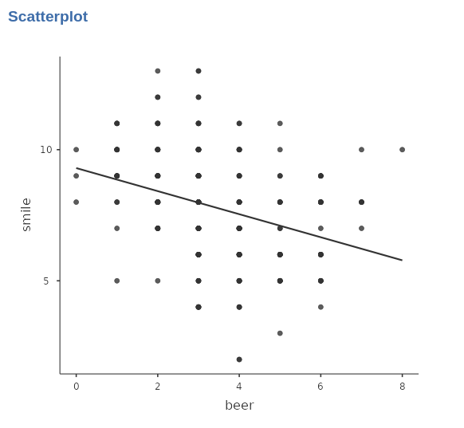
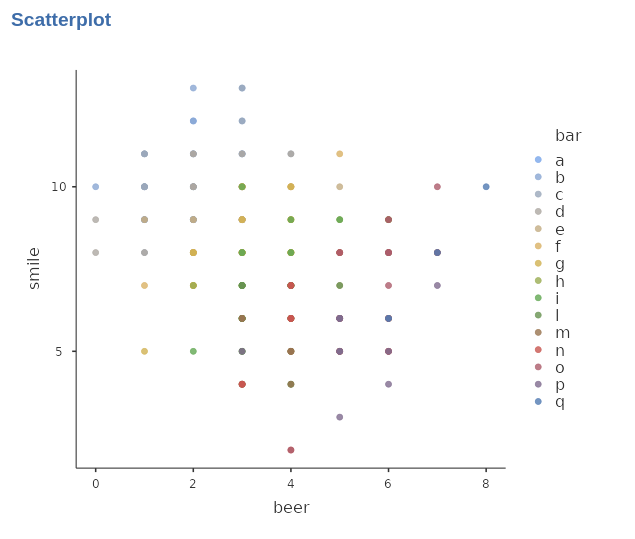
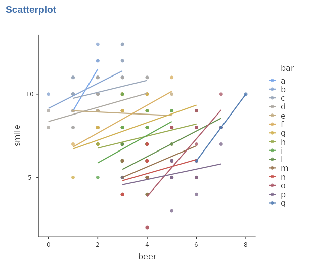
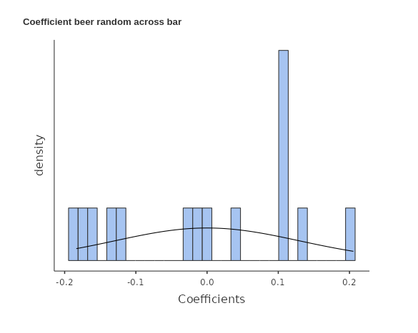
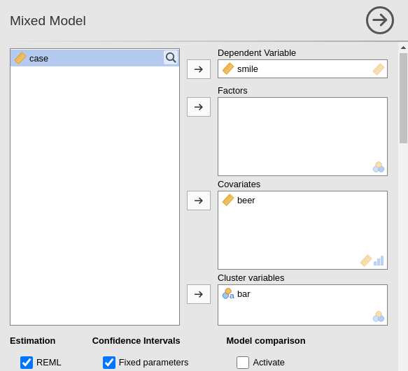
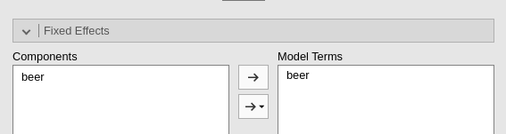
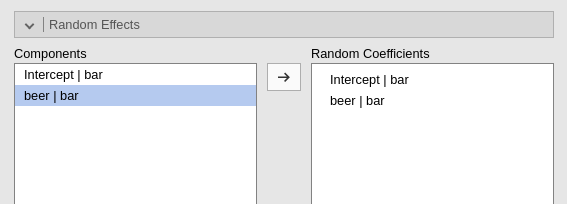

Chapter 4 Mixed Linear Models
4.1 Introduction
The General Linear Model and the Generalized Linear Model both rely on the crucial assumption that the units of analysis, specifically the scores of the dependent variable, are sampled independently. This requirement is often referred to as “independent and identically distributed” (i.d.d,. ). This assumption is essential for these models to hold, as it ensures that each observation is independent of others and that the distribution of scores remains consistent across all observations. It allows for valid statistical inferences and meaningful interpretation of the model results.
Let’s zoom in on the “independent” aspect of the assumption. When we refer to “independence,” we mean that each individual score represents a case randomly sampled from a population of scores, and that each case is not influenced by the other scores in the distribution. To put it simply, if we measure a variable on a sample of people, each person is selected independently of the others, and their individual score is not influenced by the scores of others in the sample.
What if, instead of directly sampling individuals, we employ a hierarchical or multilevel sampling approach? For instance, in our cover story, what if we sample a set of bars and then within each bar, we further sample a subset of customers to measure our variables on? In a educational project, for instance, we may need to sample schools, and within each school select a number of pupils. In such cases, the assumption of independence among individual observations is violated, as individuals within the same bar or school may be more similar to each other in their variable scores compared to individuals from different bars or schools. This introduces a level of dependency or clustering within the data.
To account for this hierarchical structure and the potential dependencies among observations within the same cluster (e.g., customers within a bar, pupils within a school), a mixed model, also known as a multilevel model or hierarchical model, is often employed. The mixed model allows taking into account the hierarchical nature of the data and adjusting for the dependencies within clusters. By utilizing a mixed model, we can appropriately model the within-cluster dependencies and obtain accurate estimates and valid statistical inferences for our analysis (Verbeke and Molenberghs 2000; Stroup 2013; McCulloch and Searle 2001).
4.2 An example
Let us be practical and reason about an imaginary study, in which we want to study (again) the relationship between smiles and beers. To carry out this study, imagine we sampled a set of bars in one city, and within each bar, we measured the average number of smiles and beers consumed over a given period of time. We utilized the Beers dataset, available in the jamovi data library, which was specifically created to exemplify a multilevel sampling structure and its complexities.
Let us inspect the scatterplot representing the relationship between beer and smile. By eyeballing the cloud of points, it is clear that a negatively sloped line would represent the outcome of a simple regression.

Indeed, the correlation between beer and smile would be \(r=-.320\). However, this representation does not consider the fact that the sample is not a random sample of people, but a sample of bars, within each a sample of people is selected. Why should it matter? Well, being in a particular bar may influence the amount of smiles one smiles, for instance, or may influence the relationship between the two variables.
To visualize this relationship, we can examine a scatterplot depicting the two variables, with the colors of the dots representing the bars.

It appears that the choice of bar does influence the results, as certain bars tend to have higher average scores in terms of smiles. Additionally, within each bar, there seems to be a positive relationship between the number of smiles and beers consumed. This can be observed by plotting individual regression lines, estimated separately for each bar, which would exhibit a positive trend between the variables.

Indeed, when fitting a separate straight line for each bar, we can achieve a more accurate fit to the data. However, it appears that these regression lines have varying intercepts (starting heights) and different slopes (steepness), indicating differences between bars in terms of their average number of smiles and beers consumed.
This means, however, that a simple straight line, defined equally for all participants in the sample, would not work. We need to model the clustering created by bars as well.
4.3 The statistical model
Let us continue our representation of cluster-specific regression lines with the help of some formulas, representing a regression line for each bar:
\[ \hat{y}_{ij}=a_j+ b_j \cdot x_{ij} \] Here we have that the predicted value of participant \(i\) in bar \(j\) is predicted with an intercept of the bar (\(a_j\)) the participant belong to, and the participant score \(x_{ij}\) multiplied by the cluster-specific coefficient \(b_{j}\). In other words, the coefficient of the regression line vary from cluster to cluster.
Now, if we estimate this model, we will have a set of intercepts, one for each bar (cluster), and a set of slope coefficients, again one per bar. Since the bars represent a random sample of bar, also their coefficients would represent a random sample of coefficients. So, the coefficients have their own distribution. For instance.

The coefficients in this case are referred to as random coefficients since they vary from cluster to cluster, with each cluster representing a sample from the population. These random coefficients capture the variability in the relationship between the variables across different clusters, specifically bars in this context
However, we need varying coefficients to capture possible effects of the clustering, but we are interest in the relationship between beer and smile, not to the variability. The sensible action, therefore, is to take the average of the random coefficients across the \(J\) clusters and use it to represent the “general” effect of beer of smile \[ \bar{b}=\frac{\sum_i{b_j}}{J} \] Because in one distribution there is only one mean, we can call this a fixed coefficient. Now, to put everything in one model, let us express the random coefficients as a deviation from their mean, or fixed coefficient.
\[ \begin{align} b'_j=b_j-\bar{b}\\ a'_j=a_j-\bar{a} \end{align} \] and write the model again
\[ \hat{y}_{ij}=\bar{a}_j+a'_j+ (\bar{b}_j+b'_j) \cdot x_{ij} \] Indeed, in this model, the intercept is composed of the fixed (average) intercept plus a cluster-specific intercept deviation (random), representing the deviation from the average intercept for each particular cluster. Similarly, the effect of variable \(x\) is comprised of the fixed (average) slope plus a cluster-specific (random) slope deviation, representing the deviation from the average slope for the specific effect of \(x\) in each cluster.
A linear model that encompasses both fixed and random coefficients is called a Linear Mixed Model
4.4 Outcome of the model
Generally speaking, when a mixed model is estimated the most important results are the fixed effects. We can interpret them as the coefficients in the GLM (Chapter 2), keeping in mind that they are the average of the random distribution of coefficients. We also obtain the variances and covariances of the random effects, usually refered to as the random component, which may be of interest for the analyst. As for any other linear model, we can look at the results from the variance angle and from the coefficients angle, because GAMLj offers results for both approaches.
Being the mixed model a linear model, we can operate all the techniques and methods we have explored within the GLM and the GzLM models, such as posthoc analysis, interaction, simple effects, model plotting, bootstrap inference etc.
4.5 Building a Mixed Model
Working through the example may not have been challenging, but when confronted with a new design and the need to establish a mixed model, difficulties can arise. These challenges typically revolve around selecting the appropriate clustering variable and determining the status of effects as random, fixed, or both. Expert opinions on these matters have sparked extensive discussions and disagreements. However, in this context, we aim to offer straightforward solutions to these dilemmas.
First, when building a mixed model, one should ask three questions:- What is (are) the clustering variable(s)?
- What are the fixed effects?
- What are the random effects?
4.5.1 Clustering variables?
A clustering variable is a categorical variable that represents a random selection of equivalent groups of cases (such as participants or observations) taken from a larger population of groups. These clusters are formed based on shared characteristics or grouping criteria.
First, the groups of observations (or participants) defined by a clustering variables should represent a sample of a larger population. This means that the researchers did not pick any particular group on purpose, but the groups were chosen randomly (or very close to randomly). Second, the groups should be equivalent, meaning that no particular group is more interesting than others. They are just alternatives that came out from the sampling process.
Consider for instance a multinational study: the classification of the variable “country” as a clustering variable depends on the nature of the research design. If the aim is to collect data from as many countries as possible, and a sample of countries becomes available, then “country” can be considered a clustering variable. In this scenario, the focus is on capturing the variability between different countries.
On the other hand, if the research objective is to compare two or three specific countries chosen for their distinct characteristics, “country” would not be treated as a clustering variable. Instead, it would be included in the model as a categorical independent variable. In this case, the interest lies in examining the specific effects of the chosen countries and assessing the differences between them.
Finally, a clustering variable should define a sample of groups that is representative of the larger population. However, if the number of groups is insufficient to constitute a reliable sample, it may be more appropriate to designate the variable as a categorical independent variable rather than using a mixed model.
4.5.2 Fixed effects?
The answer to this question is straightforward: all the effects of interest are considered fixed effects. Specifically, this includes the effects of the variables, along with the intercept, and any relevant interactions and higher-order effects that are appropriately included in the design under consideration.
4.5.3 Random Effects?
Not all effects in a model can be considered random because not all effects exhibit variation across clusters. It is important to differentiate between potential variability and empirical variability.
The effects that can be considered potential random coefficients are those that may exhibit variability across clusters. To exhibit variability across clusters, it should be possible to compute the coefficient within each cluster. If each cluster may express a different value for the coefficient, the coefficient may vary from cluster to cluster. If this condition is met, the coefficient can be included in the list of random coefficients.
Alternatively, one can identify potentially random coefficients as those effects associated with variables that vary within-clusters. If the variable varies within a cluster, than its coefficient can be computed for that cluster, and therefore it may have a different value from cluster to cluster 2.
Let’s consider an example within our cover story. Suppose in the sample we have two groups of supporters representing rival sport teams. The effect of the team variable represents the difference in the dependent variable between these two groups of supporters. This effect can be considered a fixed effect. However, whether the effect of the team should also be considered random depends on the design of the study.
If each bar in the sample hosts supporters of both teams, it becomes possible to compute the difference between the teams within each bar. In this case, the effect of the team can potentially be treated as a random effect. On the other hand, if each bar exclusively hosts supporters of only one team, it is not feasible to compute the team effect within each bar. Consequently, the coefficient has no potential to be random and should be estimated solely as a fixed effect.
Having said that, it is still possible that not all effects that are potentially random exhibit empirical variability in the data. In some cases, even though an effect could have theoretically varied, it may not show any actual variability in our dataset. Such effects that do not demonstrate empirical variation should be removed from the list of random coefficients. Including them can impede model convergence and potentially introduce bias into the results. When this is the case, the results of an initial estimation of the model would suggest which coefficients are not empirically random.
4.6 Model Estimation
We now show how to estimate a simple model with one continuous independent variable. The clustering variable is the \(bar\) variable,featuring 15 clusters. After selecting Linear Models -> Mixed Model menu, we can set the variables and their roles.

We notice that we insert \(bar\) in the clustering variables. Now the model needs to be defined. The fixed effects are inserted by defaults as the effects of the independent variables.

The random coefficients must be defined by the user. On the left side, all possible effects are listed, with the notation coefficient | cluster. Please notice that the listed coefficients are not only the potential random coefficients, but all possible coefficients. Thus, it is the user’s responsibility to pick the correct potential random coefficients.

As soon as we define the random component, the estimation begins.
References
This latter definition does not apply well to intercepts, but intercepts can always be potentially random coefficients↩︎